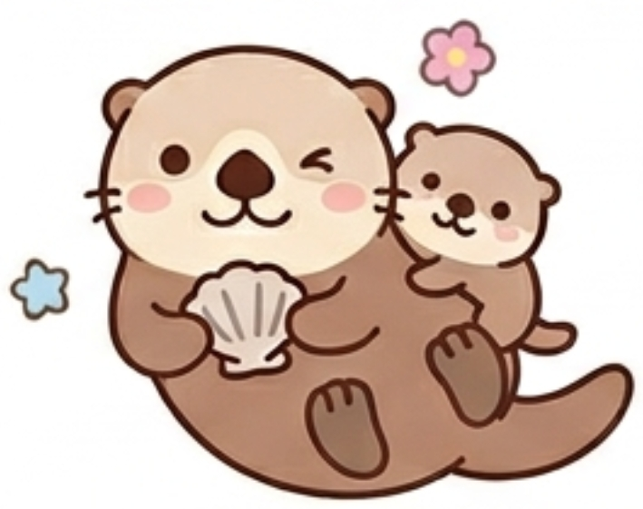

あなたのフレンドタイプは...

BFPH：おんぶに抱っこラッコ
あなたは、おっとりとした穏やかなオーラで、周囲のトゲトゲした空気を一瞬でまあるく中和してしまう、グループの「愛されキャラクター」です。自分から突飛なボケを連発して笑いの中心をかっさらおうとするエゴはなく、むしろ自分が目立ちすぎて場の調和を乱してしまうことを人一倍気にする繊細さを持っています。
内面には「自分が心地よく過ごしたい」「めんどくさいことは避けたい」という秘めたる想いはありますが、それを他人に強要することは一切ありません。
基本的には、みんなの話を「いいよ〜」「楽しそうだね〜」と笑顔で受け止める最高の聞き手であり、お互いの意見がぶつかりそうになったときにも、そのトゲのない存在感で場をいつもの居心地の良い温度感へとそっと戻せる、ちゃっかり者ながらも優しい軌道修正役です。
友達から見たあなたは、ズバリ「自分から多くを主張しないけれど、そこにいるだけで全員が笑顔になれるグループのマスコット」です。
遊びの計画が始まっても、あなたが自分から「ここに行きたい！」「これがしたい！」と激しく自己主張することはありません。「どこでもいいよ〜」「みんなが決めたやつについて行く〜」と完全にみんなの意見を尊重し、車を出す人やお店を予約してくれる人に、文字通り「おんぶに抱っこ」の状態で優しく乗っかります。友達の間では「ラッコは今日も完全にみんなにおまかせモードだなｗ」「自分で決める気ゼロで逆に清々しい」と呆れられつつも、その素素直さが面白がられています。
しかし、ただのワガママと違ってあなたが深く愛されるのは、連れて行かれた先で誰よりも「わぁ！ここ最高！」「準備してくれて本当にありがとう！」と、みんなの話やこだわりを全力で肯定し、感謝を伝えるからです。
自分が笑いの中心になって場を引っ張ることはなくても、あなたがみんなの話を嬉しそうに聞いてニコニコしているだけで、個性の強いメンバーたちの肩の力が抜け、場がいつものアットホームな日常へと引き戻されます。
「あれは嫌だ」「これはダメだ」というエゴを押し通さないため、企画する側やまとめ役のプランに100%笑顔で乗っかってくれます。場をスムーズに収める上で、これほどありがたい存在はいません。
他人の話や努力を、一切の遠慮なしに全力で受け止めて喜んでくれるため、あなたと一緒にいる友達は「この人と一緒に過ごせて良かったな」と大きな満足感を得ることができます。
自分が喋って場を凍らせるのを恐れる配慮深さがあるからこそ、あなたがいるだけでグループ内の対立やギスギスした空気が中和され、場となごやかに落ち着きます。
あなたの愛されラッコ精神はグループの癒やしですが、空気を悪くするのを恐れて「おまかせ」にしすぎると、時に「自分からは何もリスクを負わず、他人の努力にタダ乗りするだけの人」と思われてしまうことがあります。お店の予約、運転、お金の計算などを毎回特定の友達に丸投げしたまま、自分は移動中の車内で爆睡したり、待ち合わせに当然のように遅刻したりしていると、いくら優しい友達でも「さすがに甘えすぎじゃないか？」と不満が溜まっていきます。
周りがあなたをお世話してくれるのは、あなたのことが大好きであり、あなたの聞き上手で素直なキャラクターをリスペクトしているからです。
たまには「いつも運転ありがとう、これお茶代！」と差し入れをしてみたり、数回に一回は「今回は私がお店調べてみるよ！」と自分から動く姿勢を見せてみてください。あなたがほんの少しだけ「みんなを支える側」の苦労を思いやる行動を見せるだけで、友達は「あのラッコが私のために頑張ってくれた！」と感動し、あなたのことをもっともっと大切にしてくれるようになります。